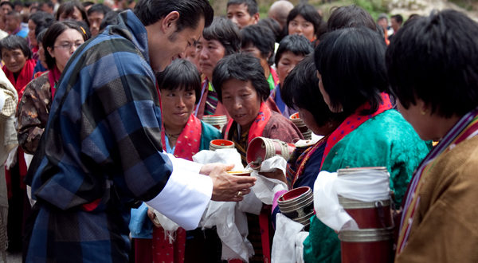

Bhutan has a rich and unique history that has shaped its distinct culture and governance. Here is an overview of the history of Bhutan.
Ancient History
Bhutan’s history dates back to ancient times, with archaeological evidence suggesting that the region was inhabited as early as 2000-1500 BCE. The indigenous people practiced Buddhism and animistic beliefs.
Formation of Bhutan
Bhutan’s origins as a unified state can be traced to the 17th century. Zhabdrung Ngawang Namgyal, a Tibetan lama, is credited with unifying Bhutan and establishing a dual system of governance that included both spiritual and secular leaders.
British Influence
In the 19th century, Bhutan became embroiled in a series of conflicts with British India. The signing of the Treaty of Punakha in 1910 established British suzerainty over Bhutan’s foreign affairs, but Bhutan remained autonomous internally.
Monarchy
Bhutan adopted a hereditary monarchy in 1907, with Ugyen Wangchuck becoming the first Druk Gyalpo (Dragon King).
Modernization and Reforms
Bhutan remained largely isolated from the outside world until the mid-20th century. In the 1950s and 1960s, the king initiated a series of modernization efforts, including the establishment of formal education and healthcare systems.
Political Changes
In the 20th century, Bhutan underwent several political changes. In 1952, the country transitioned to a democratic monarchy with the introduction of a National Assembly (Tshogdu) in 1953. The king remained the head of state.
Land Reforms
In the 1950s and 1960s, Bhutan implemented land reforms, redistributing land from large landowners to peasants and reducing wealth inequality.
Adoption of Gross National Happiness (GNH)
In the 1970s, Bhutan’s fourth king, Jigme Singye Wangchuck, introduced the concept of Gross National Happiness, emphasizing holistic well-being and sustainable development over economic growth. Bhutan is renowned for its unique development philosophy of Gross National Happiness (GNH), which prioritizes the well-being and happiness of its citizens over purely economic indicators.
The country also places a strong emphasis on preserving its cultural heritage and traditions, including the promotion of the Bhutanese language, traditional dress, and architectural styles. Bhutan’s history is characterized by its strong sense of cultural identity, unique political system, and commitment to preserving its heritage while embracing modernization and democratic values.
 Constitutional Monarchy
Bhutan’s political landscape changed in the 21st century. In 2008, the country transitioned to a constitutional monarchy with the first-ever democratic elections, and the Fifth King, Jigme Khesar Namgyel Wangchuck, handed over executive power to an elected government.